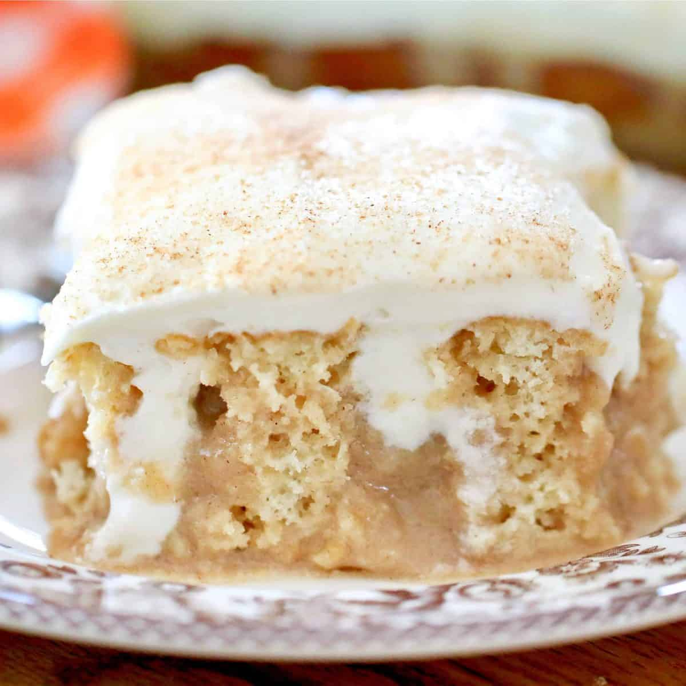

Cinnamon Roll Poke Cake

Description
Get your cake pans ready for the most epic poke cake. It has everything you love about cinnamon rolls, even the cream cheese frosting! It's extremely decadent and exactly what we are craving at every moment of the day.
Ingredients
- 1 (14-oz.) can sweetened condensed milk
- 4 tbsp. melted butter
- 1/2 c. packed brown sugar
- 1 tsp. cinnamon
- Pinch of kosher salt
- 1/2 c. heavy cream
- 1 (8-oz.) block cream cheese
- 4 tbsp. butter, softened
- 1 c. powdered sugar
- 1 tsp. pure vanilla extract
Steps
- Make cake: Preheat oven to 350°. Grease a 9"-x-13" baking pan with cooking spray. Prepare cake according to package directions. Pour batter into prepared pan and bake until a toothpick inserted in middle comes out clean, 20 minutes. Let cool.
- Make filling: In a medium bowl, whisk together sweetened condensed milk, butter, brown sugar, cinnamon, and a pinch of salt.
- Make frosting: In a large bowl using a hand mixer, beat heavy cream until stiff peaks form.
- In another large bowl, beat cream cheese and butter together until no lumps remain. Add powdered sugar and beat until smooth, then add in vanilla and a pinch of salt. Fold in whipped cream until just combined.
- Using the bottom of a wooden spoon, poke holes all over cake. Pour filling over and use a rubber spatula to push into holes. Frost with cream cheese frosting. Refrigerate 20 minutes before serving.